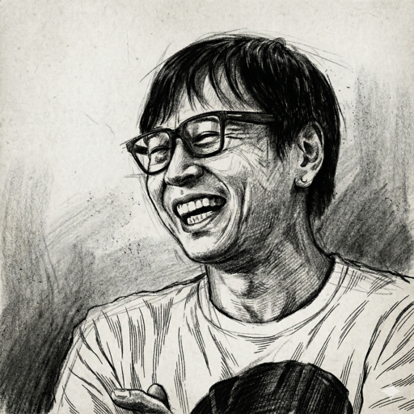
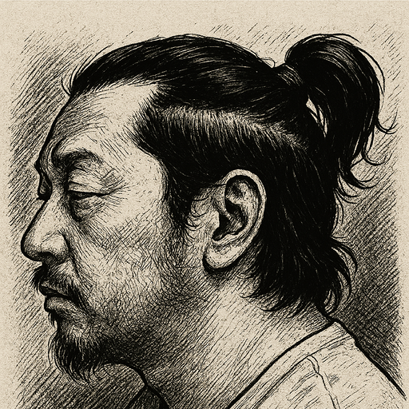

Metacreative Document
対話のログを、
知的資産に変える。
三層構造のドキュメントで、
対話の中に眠る知を掘り出し、磨き、価値につなげる。
ログを取るのは簡単になった。でも本当に「活用」できていますか？
- チームの議論が白熱した。でも翌週には、誰も内容を覚えていない。
- セミナーで「いい話だった」と思った。感想は言えるが、中身を説明できない。
- 面白いポッドキャストを聴いた。でも音声なので内容の振り返りが難しい。
- AI要約はきれいにまとまっている。でも、不思議と読み返さない。
これらの課題を解決するために、メタクリドキュメントが生まれました。
MetaCreativeとは
その実践の1つとして生まれたのが、対話の中に眠る知を掘り出し、磨き、創造につなげるためのメタクリドキュメントである。
What Is
「メタクリドキュメントとは」を、2つの視点で読む
対話のログは「起きたこと」を記録する。メタクリドキュメントは「何が生まれたか」を引き出す。同じ対話から、何が変わるのか。スライダーを動かして比べてみてください。
Structure
メタクリドキュメントの三層構造とは
対話の引用
実際の対話から選び抜かれた発言。文脈と温度感を保ったまま、核心的なやりとりを再現する。
地の文（導の文）
対話の前後を補い、文脈をつなぎ、読者を導く第三者の視点。映像作品のナレーションに近い役割を果たす。
註釈
対話の中の何気ない一言を、学術的概念や文化的文脈と接続する知的架橋。対話を「教養」に昇華させる。
対話と知識創造——ソクラテスの問答法から
SHOWCASE
メタクリドキュメントショーケース
対話から生まれたドキュメントを、読める形で公開しています。
自己紹介という名の存在証明
メタクリドキュメントを読む → Metacreative Radio遠いものを結びつける知性
メタクリドキュメントを読む → Metacreative Radio予期せぬ「ノイズ」を愛して、デザインする
メタクリドキュメントを読む →テントの中で始まる戦略
メタクリドキュメントを読む → ザッソウラジオ言葉の地層を掘る手つき
メタクリドキュメントを読む → ザッソウラジオラクガキみたいに生きる
メタクリドキュメントを読む →Use Cases
こんな場面で活用できます


暗黙知と形式知——なぜ要約すると「あの感じ」が消えるのか
About Us
タムカイ と Opi

株式会社AFFLATUS 代表 / 富士通株式会社 デザインフェロー
タムラカイ（タムカイ）
「世界の創造性のレベルを1つあげる」をパーパスに、人と組織の対話設計をテーマに活動。ラクガキライフコーチの肩書きでの企業・自治体向けの講演・ワークショップや、富士通の全社変革プロジェクト「フジトラ」への参画など、創造性とコミュニケーションの現場に関わり続けている。

元NAKED Inc. 創業メンバー / 株式会社FULL 代表
大屋友紀雄（Opi）
1997年、村松亮太郎らとともにNAKED Inc.を設立。東京駅の3Dプロジェクションマッピング『TOKYO HIKARI VISION』をはじめ、空間全体を演出するプロジェクションマッピングや映像技術で国内屈指のクリエイティブを誇る。コンテンツプロデュース／クリエイティブ・ディレクションを中心に活動。
Contact
お問い合わせ
制作のご依頼、サービスに関するご相談はこちらから。
AFFLATUS.Inc →